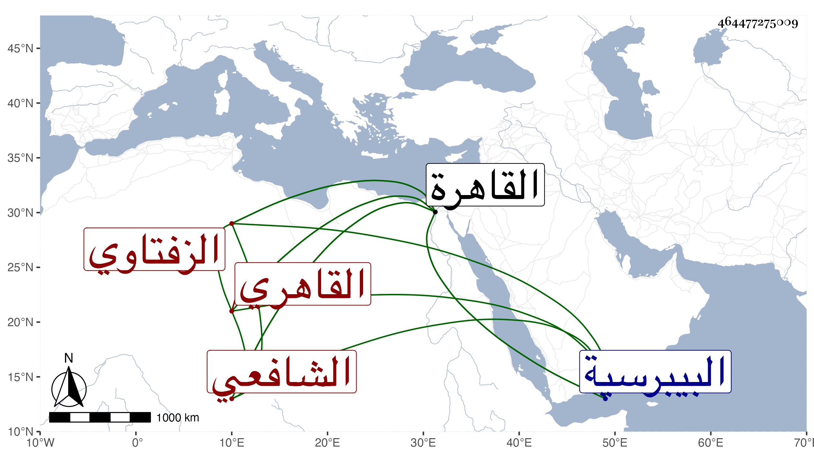

0902Sakhawi.DawLamic.ITO20230111-ara1.EIS1600.464477275009
Biography ID: 464477275009
602
قاسم بن إبراهيم بن عماد الدين الزفتاوي الأصل القاهري الشافعي ويعرف بالزفتاوي . ولد قريبا من سنة ثمان وثمانمائة بالقاهرة ، ونشأ بها فحفظ القرآن وكتبا وأخذ عن البرهان البيجوري والشمسين البوصيري والبرماوي والولي العراقي والطبقة ثم الشرف السبكي والقاياتي والأبناسي والونائي والمحلي والشمني ثم الأبدي والكافياجي والتقي الحصني وأكثر من ملازمة شيخنا في رمضان وغيره ، ولم يفتر عن الاشتغال ولا قصر عن الاستفادة حتى ممن دونه هذا مع كون شيخه البيجوري فيما بلغني أشار عليه بالتصدي لنفع الناس ، وقد نوه به السفطي وساعده في مرتب بالجوالي ثم استنابه القاياتي في القضاء وأضاف إليه بعض الأعمال وحمدت سيرته في ذلك وقام بنصر الشرع واستمر يلي عمن بعده إلى أن مات مع ملازمة الاشتغال والرغبة في الجماعات والحرص على شهودها وربما أم بجامع الحاكم وخطب فيه أحيانا ، وحج وجاور على طريقة جميلة وأقرأ بعض الطلبة هناك وكذا أقرأ يسيرا بالقاهرة وألقى دروسا بجامع الغمري وغيره وكان كثير الفوائد والنكت لطيف العشرة محبا في الفضلاء منوها بذكرهم مع توقف في لسانه وفهمه وصلابة في دينه ، ولم ينل من الوظائف ما يستحقه بل مضى أكثر عمره وهو يتكسب بالشهادة مع مباشرة التصوف بالجمالية وبعض أطلاب ، صحبته مدة وسمع بقراءتي وسمعت من نوادره ومباحثه ، ونعم الرجل كان فضلا وتواضعا وديانة . مات في يوم الثلاثاء رابع عشري ذي الحجة سنة تسع وخمسين مبطونا شهيدا وصلي عليه من الغد بجامع الحاكم ودفن بحوش البيبرسية وكان له مشهد جليل ، وأثنى عليه الجم الغفير رحمه الله وإيانا .
